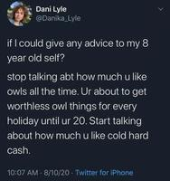

0
Tom's Hardware reports:
Four plaintiffs subscribed to ChatGPT, Claude, Grok, or Gemini filed a proposed class-action lawsuit alleging that the developers of these AI models violated antitrust laws when they agreed to slow AI development. According to the Associated Press, the lawsuit argues that this agreement would "reduce the value consumers get for paid AI subscriptions" and that this coordination started in July 2026 after the leading AI labs signed a statement admitting there is "intense competitive pressure not to unilaterally slow" development.
The plaintiffs recognize the need for AI development to slow for the sake of safety, but they say that Anthropic founder Dario Amodei's cooperation proposal is a "shortcut" that "substitutes collective restraint for individual accountability." Attorney Nick Rowley, the lead counsel for the plaintiffs, says, "AI will quickly spin out of human control and could kill us all if we allow AI safety and protocol ... to be controlled by private self-serving agreements between the world's most powerful 'for profit' technology companies."
"Representatives for Anthropic, OpenAI, Google and SpaceXAI did not immediately respond..."
reports the Associated Press:
The coordination largely took place on Sept. 12, the lawsuit argues, when Anthropic CEO Dario Amodei published an essay urging for industrywide cooperation on decelerating advancements in favor of enhanced safety measures. That same day, OpenAI CEO Sam Altman, SpaceXAI CEO Elon Musk and Google DeepMind's co-founder and chair Demis Hassabis each publicly responded to Amodei's proposals in agreement. But the lawsuit also alleges that the coordination began to take shape months earlier. It points to a statement from July 2026 that high-ranking employees from several of the leading AI labs signed that acknowledged the "intense competitive pressure not to unilaterally slow" development. That statement called on the government to support a global effort to slow automated AI development.
Sam Altman even specificially said "we do not believe we need to wait for an antitrust exemption or legislation to begin the work of providing this confidence," notes Tom's Hardware.
However, the Trump administration shot down this idea... Chinese state media also criticized this announcement, saying that the call to put the brakes on AI development is nothing but a response to Chinese competition, especially as Amodei's essay explicitly mentioned the desire to slow China's progress and widen the U.S.'s gap over Beijing
Read more of this story at Slashdot.
The Rise and Fall of the Artificial State ultimately asks the question, "How did we cede control of our democracy to the machines, and can we get it back?" according to the Harvard's Arts and Sciences site, FAS Current:
The new title finds Lepore, who used to teach a course at the College titled "The Rise and Fall of the Machine," charting the ascent of what she calls the artificial state: the digital communication infrastructure by which governments and private corporations automate and ultimately control public discourse. Following her Pulitzer Prize win for "We the People: A History of the U.S. Constitution" (2025), "I wanted to think about whether liberal constitutional democracies can survive this moment in time," Lepore shared in a phone interview...
[In the "current ChatGPT moment"] Lepore found herself asking: "Who are the people who are clamoring to be replaced by machines, to have movies made by machines, and novels written by machines?" And who, she continued, is pushing for our government to be determined by these machines? In the book, Lepore notes that technological tools are increasingly influencing elections around the world...
However, she sees the 2026 U.S. midterms as an inflection point. In a recent piece in the Financial Times, Lepore wrote, "This year marks the first AI election. Voters are asking chatbots how they should vote. Campaigns and activists are using AI to analyze the electorate, send micro-targeted messages, produce tailored ads and even deepfakes...."
Lepore stresses in the book that "nobody should trust historians to make predictions," but she believes it's possible for democratic citizens to wrest back control. Referencing proposals such as New York's data center moratorium law, Lepore ends by describing a "growing and increasingly noisy tech backlash."
"It's not foreordained. This isn't inevitable," she said during the interview.
"In the book's epilogue Lepore predicts, as her title suggests, a fall of the Artificial State," writes the California Review of Books. "That argument turns out to be speculative, much more of a hope than a certainty."
[Lepore] does support her prediction by positing that the Artificial State is "poorly designed and badly built," that it has not given people safety and happiness but rather a prison of glowing screens, and that a majority of Americans want more control over AI. To escape the Artificial State we will have to imagine a different future by gaining more knowledge of the past in a search for meaning. Of course, powerful forces want to deny that and turn us into servile automatons.
The Guardian adds that "While Lepore interprets much classic sci-fi, such as Isaac Asimov, as cautionary, she observes that "the architects of the Artificial State seem to have read these stories, unironically, as instruction manuals, guides for how to build robots that would one day rule the world". (The Atlantic writes that "What one gathers from these misreadings is not so much that science fiction itself is nefarious, but that arrested development might be...")
But The Indian Express writes that despite the author's bleak conclusion, "Lepore is not a pessimist. Because the Artificial State is a construct, neither alive, nor truly indestructible, she argues it is still possible to take it apart... [T]his is a clear-eyed reckoning rather than a doomsday tract. It is not an easy read, but an essential one for anyone unsettled by the pace of the AI wave."
Read more of this story at Slashdot.
"New research led by Stanford Medicine reveals that what we call the brain is two distinct organs that evolved independently over hundreds of millions of years," Stanford Medicine announced this week:
The new research finding shows that the human brain consists of two ancient nervous systems cleverly packaged together — a more primitive part that regulates our hearts' beating, our breathing and other functions, and another that makes us distinctly human, capable of poetry, mathematics and wondering about our own origins. The discovery could help explain why scientists have struggled for decades to grow certain types of brain cells in the laboratory — and it opens new avenues for studying devastating diseases that affect the brain stem...
[S]cientists have struggled for decades to generate human hindbrain neurons in the laboratory. This gap has hampered research into devastating diseases affecting the brain stem, including spinal muscular atrophy and amyotrophic lateral sclerosis... The researchers' breakthrough came from studying the earliest moments of embryonic development... [Study co-authors Carolyn Dundes and Rayyan Jokhai] discovered that the hindbrain follows a separate developmental path, running in parallel to — rather than branching off from — the pathway that creates the forebrain and midbrain... This revelation explained decades of frustration in the field — scientists had been trying to turn one type of progenitor cell into another that it is fundamentally incapable of becoming... Armed with this knowledge, the researchers for the first time successfully coaxed human pluripotent stem cells (a kind of cell that can create any cell in the human body) to become functional hindbrain motor neurons in the laboratory...
Finally, the researchers looked back over 550 million years of evolutionary time. They found the same two-origin brain pattern in chickens; zebrafish; and, remarkably, in acorn worms, tiny creatures living on the ocean floor that share a distant common ancestor with humans. Jellyfish, which diverged from humans about 600 to 700 million years ago, have two nervous systems at different ends of their body. "Our research suggests that evolution took two existing neural systems and pushed them together spatially," Loh said. "Having the brain as one organ would probably be more efficient, but we rely on this primordial way to make the brain as two separate pieces."
Thanks to Slashdot reader Beeftopia for sharing the article.
Read more of this story at Slashdot.
The European Commission "proposed on Thursday banning children under 13 from social media, with parent-supervised accounts until 15," reports Reuters.
"Enforcement would rely on a tool Brussels built itself" — a free, open-source age verification smartphone app "that tells a platform whether a user meets an age threshold without revealing their identity..."
If passed, the proposed Kids Act would create the world's largest social media access restriction, covering 450 million people across 27 countries... [The EU-built age-verification app] is being rolled out through member states, with seven pilot countries: Cyprus, Denmark, France, Greece, Ireland, Italy and Spain. The Commission expects EU-wide availability by the end of 2026.
It will also be used to prove users are over 18 when accessing adult sites, a restriction already implemented under the Digital Services Act...
[T]he system itself is decentralised. Member states run it through issuers they designate, and the proofs live on the user's phone. There is no central EU database of ages or of who verified whom... A user proves their age once to a nationally designated issuer — a body vetted by the member state, which can be a digital ID provider, a bank or a post office. At a restricted site, the app certifies that the user is above the required age threshold. The platform receives only a yes-or-no response. Issuance and verification are handled by separate entities. The proof provider is not told which service the proof was used for. Each proof works only once, preventing cross-service tracking. No identity documents or biometric data are retained. The code is open-source, allowing independent scrutiny.
The significance of the EU approach is that it provides a common age-verification mechanism rather than leaving individual platforms to develop and enforce their own systems.
"Online platforms can easily rely on our age verification app. So there are no more excuses," [EU Commission President Ursula] von der Leyen said...
The proposal must be approved by EU member states and the European Parliament before becoming law.
Non-compliance would risk fines of up to 6% of a tech company's global annual sales, plus supervisory fees, Reuters reported earlier.
The EU's plan follows similar initiatives in Australia, Britain, China, India, Turkey and several European Union countries.
Read more of this story at Slashdot.
Saturday morning President Trump announced he's creating an AI task force and appointing an AI czar, reports Politico.
"I am forming the AI Force, much like I did Space Force, which has been a tremendous SUCCESS," Trump wrote Saturday in what Politico earlier described as "a lengthy Truth Social post on Saturday morning."
TRUMP: Over the years, there have been many Hoaxes, all generated by the Radical Left Dumocrats, for purposes of destroying our Country. RUSSIA, RUSSIA, RUSSIA, UKRAINE, UKRAINE, UKRAINE, Global Warming, Impeachment Hoax #1, Impeachment Hoax #2 [...] and now, the decimation, or destruction, of AI, commonly known as Artificial Intelligence — And I, as President of the United States, will not stand by and let this happen.
It all began with an attack on our Data Centers, until people realized how wealthy and prestigious they were for the Communities in which they were built. Higher Salaries, Lower Taxes, and Safer Streets, was the result, and the crazed Data Center attack has largely failed, so now [...] they are going straight at AI. We will not in any way hinder or stifle the Growth of this incredible Industry. Rather, we will cherish it, help it, and watch over it, as it grows!
However, we will also be looking for BAD, and we can do that, very easily, with our already existing Criminal and Civil Justice System. For this purpose, I am forming the AI Force, much like I did Space Force, which has been a tremendous SUCCESS, in my First Term. To that end, I will be announcing, in the near future, the AI "Czar" — Only High I.Q. individuals need apply!
Trump concluded by saying AI "is the next Industrial Revolution, or Internet, but will be even larger and more impactful... We are leading China, and the rest of the World, and I intend to keep it that way!"
But what exactly is AI Force? "The White House did not immediately respond to a request to clarify whether the agency would be military or civilian," notes the Washington Post. So now "The tech industry is struggling to make sense of President Donald Trump's surprise announcement," Politico reported Saturday afternoon:
Four representatives for the sector, who were granted anonymity because they were not authorized to speak publicly, told POLITICO that the industry was not widely informed of Trump's decision prior to the Truth Social post. "Nobody knows what the idea even is," one of the people said. Another said that feedback on the idea was not widely solicited within the industry. The White House did not immediately respond to a request for comment...
"I think that he clearly feels pressure to say something, but he's torn because he's just spent the last few days saying that the whole thing is a hoax," Adam Kovacevich, CEO of the progressive tech industry coalition Chamber of Progress, said of Trump and his prior dismissal of AI doomsday scenarios. Since the departure of David Sacks, who stepped down as the Trump administration's previous AI czar earlier this year, the White House has been "making up AI policy as it goes," Kovacevich added. "I think it's clear they've really missed the presence of an organized leader like David Sacks was."
One of the tech industry representatives said they were confused about whether the task force would be charged with formulating more AI regulations or recommending policies that would further stimulate the tech's development. Taylor Barkley, director of federal government affairs at the industry-aligned Abundance Institute, is eyeing it as a way to solidify a light-touch government approach to the technology he says will foster innovation. "Any AI Force or AI Czar should have one job: keep the field open so entrepreneurs at every scale can compete, free from onerous regulation," he told POLITICO. "Existing criminal and civil law can handle bad actors. New permission regimes will stifle the very activity America needs most."
It's worth noting that the day before, California's governor made an announcement. "With Donald Trump and Congress asleep at the wheel, Governor Gavin Newsom is once again taking the lead to strengthen AI safety for all Americans," the governor's office announced Friday. Newsom issued a strong executive order convening experts to help California create new AI safety laws and reporting rules, possibly even requiring safety auditors embedded in labs and emergency "kill switches" in frontier models.
Read more of this story at Slashdot.
U.S. military intelligence received an inaccurate report this spring that a Chinese ship in the Middle East was transporting components of a nuclear weapons program, reports CNN.
"The US military swung into action with plans to intercept the vessel, according to four sources familiar with the episode."
Armed members of the US military were preparing to board the ship [according to two of the sources]. Military planes were in the air, one of those sources and another source familiar with the incident said. It was only just before the planned operation that officials dug deeper into the report put together by a special operations command analyst and found it had been generated with the help of AI — and that a chatbot the analyst had used inaccurately identified the material the ship was carrying.
The report, according to one of the sources, was "entirely false." But it also "almost started a war," the source said. Any US operation against a Chinese vessel could have risked spiraling into an armed conflict between the two nations.
Across the US military and the intelligence community, officials are pushing to weave AI into nearly every facet of their work, from analyzing the huge volumes of raw intelligence the US collects and selecting targets for strikes, to more mundane applications like managing budgeting, logistics and supply chains. But the episode underscores the profound risks of using this powerful, new and relatively poorly understood technology for targeting in the middle of a war...
Officials say the US can't afford to fall behind in integrating AI in case it must one day fight China or another adversary who would potentially be able to stay one step ahead of the US. In January, Defense Secretary Pete Hegseth released his agency's "Artificial Intelligence Acceleration Strategy" in a bid to speed up the military's use of AI. "We will unleash experimentation, eliminate bureaucratic barriers, focus our investments and demonstrate the execution approach needed to ensure we lead in military AI," Hegseth said in a speech announcing the strategy.
Thanks to long-time Slashdot reader stabiesoft for sharing the news.
Read more of this story at Slashdot.
The James Webb Space Telescope has been picking up little red dots in almost every image,
writes Quanta magazine. And now two teams of astronomers propose they're looking at a new astronomical object: a black hole star. It shines with the light of billions of suns — and hides a black hole in its core.
But Quanta adds that "not everyone agrees with this bold interpretation."
[Two Webb telescope surveys of distant objects included little red dots] for hours at a time. They tabulated precisely what shades of light were coming from each dot, and how bright the shades were... The bombshell discovery in the little red dot spectra was that the colors of hydrogen were smeared out across multiple shades. Usually, seeing such an effect means you're looking straight at an exposed black hole. Black holes whip hydrogen clouds around them at furious rates, with the clouds emitting slightly different colors depending on their speed...
Then, in the spring of 2025, [two of the paper's astronomers] de Graaff and Naidu's teams unveiled the two strangest dots yet... The new little red dots couldn't literally be stars — they were way too bright. And they didn't look much like black holes either. Black holes have an assortment of ringlike structures of different temperatures... Naidu and de Graaff concluded that they were[ looking at the first examples of something combining the vigor of a black hole with the outward appearance of a star: a black hole star... This black hole would pull gas around it, dramatically heating it and pushing light and energy outward, which would keep the outer layers of hydrogen from collapsing inward. In this way, the black hole would form the "engine" of the star, analogous to the fusion-powered core of our sun... "We are seeing the seed," Naidu said. "This is the birth of potentially every massive black hole in the universe."
"Astronomers have spent the last year in a lively debate about what's really going on," Quanta adds. And this week simulations using the Japanese Supercomputer ATERUI III "have explained the nature of the Little Red Dots without requiring any exotic assumptions," writes Phys.org — by conducting the most detailed cosmological simulations yet of conditions in the early universe:
The simulations show that the Little Red Dots are black holes growing at a rate that would be impossible today because of conditions in the early universe. The simulations show that in the early universe, intense far-ultraviolet (FUV) radiation from nearby galaxies suppresses star formation in gas clouds, so rather than forming many small stars, the gas can form a single supermassive star, which then collapses into a black hole seed.
The simulations show that, once formed, these black hole seeds are surrounded by dense gas disks. This environment traps radiation, enabling the black holes to grow at rates dozens of times faster than would be possible in the modern universe. The simulated properties of these rapidly growing black holes provide a good match to the Little Red Dots (LRDs) observed by the James Webb Space Telescope (JWST).
Read more of this story at Slashdot.
Neither OpenAI or Anthropic is acting responsibly, warned AI researcher Jacob Coxon when resigning last week from Anthropic. But just hours earlier, OpenAI VP of Research Aidan Clark had posted "For the first time, I am asking myself if things are moving too fast. I'm honestly not sure, but I am sure that it would be good for us to have an answer to 'What would a successful pace look like?'"
CNN noted Wednesday they're just some of the many AI insiders who are now concerned about the speed of research. Coxon even wrote that "The people building AI earnestly believe that it could kill us all by the end of the decade. This is not a marketing stunt. If anything, many executives and senior researchers will couch their phrasing in the press to sound sensible — but I hear the same people express fear privately."
In 10 days since, Coxon's post has been viewed more than 170 million times, warning that OpenAI and Anthropic are "racing straight to self-improving superintelligence and gambling with our lives." It's part of what CNN now calls "pressure on AI companies and governments to do something about the pace of development and safety," where "much of that pressure is coming from staffers inside the companies."
One staffer at a top AI company told CNN the fears of how AI could hurt humanity keeps them up at night. Another researcher who recently left a different AI company said it's a common subject of conversation at parties and social events in Silicon Valley. "You can't spend more than a few hours in this community without realizing that a very substantial number of people are really pretty worried about these sorts of outcomes," said the researcher. "A majority would say there's some chance of it killing everyone...." Dozens of Coxon's colleagues in the AI industry publicly supported his statements, with some making even more dire predictions... OpenAI CEO Sam Altman and SpaceXAI CEO Elon Musk agreed to Amodei's proposal to embed independent watchdogs at the AI companies...
"I would burn my equity to the ground in a heartbeat for a 1% higher chance we make it out of this situation alive. I expect a great many of my colleagues across the industry would as well," wrote Drake Thomas, who works on AI safety at Anthropic. "I promise you, we are actually just f**king scared, it's not galaxy brained marketing..." AI staffers told CNN that they fear that as AI gets better at training and improving itself, their leverage goes down, prompting today's urgency. "As we get into this recursive self-improvement loop, I think that might substantially reduce staff's bargaining power, because frankly, you'll be able to replace many of the staff with models that can do as good a job," the researcher who recently left a top AI company said.
Coxon posted Tuesday on X that Anthropic "largely initiated" the race to recursively self-improving AI, justifying it with "a belief in its inevitability." And then OpenAI "had to shed a bunch of dead weight like Sora," as he sees it, "because Anthropic was going for the jugular." (In fact, his specific disagreement with Anthropic's leadership was whether China and the U.S. could ever negotiate an alternative to their current race towards self-improving AI...)
In an informal "Ask Me Anything", Coxon responded to a question about when we'd see a Terminator-like malevolent AI by saying that "Skynet could go live in the 2030s if we aren't careful. ai-2027.com is a modern skynet story written a year ago and it's on track so far." Yet while AI development risks an end to humankind, "I do think that if we go slower we can take risk to 0%... But this requires radical action." He acknowledged there was still a possibility that the steady increases to model intelligence could suddenly plateau, but "They haven't so far, and it's just a few more steps up the ladder to hit the finish line."
To avoid stifling innovation, he recommends "prioritizing applications that actually improve people's lives [like healthcare discoveries], rather than immediately going for raw economic value or intelligence." But isn't mass unemployment a more pressing threat? "Things are coming so fast that unemployment would be a brief preliminary to deadly superintelligence."
To people who feel disempowered, Coxon offered his solidarity. "I also feel disempowered. Part of resigning was a feeling of hopelessness about the future. I would say — keep your eyes open as things get crazier and advocate for increased transparency into AI companies."
When asked if he'd start his own company now, Coxon said he had "No idea what I'm doing next."
Read more of this story at Slashdot.
The Register reports:
When Microsoft's developers and engineers sit down to code, they can now choose to work in Rust, which Redmond has added to its list of canonical languages. "Rust now is a Tier One language at Microsoft, and that just means that it sits among C++, C# and TypeScript as the best supported languages for internal development in the company," explained Victor Ciura, Microsoft principal engineer for the Rust tooling team, during a keynote talk today at this year's annual RustConf, being held this week in Montréal. Ciura said Microsoft has "paved a path" of tools and processes that support local Rust development across the entire software development lifecycle.
Rust is no stranger at Microsoft and is already present in over 100 Microsoft project repositories. The company has built Oxidizer, a set of crates to build scalable services in Rust, which have been used to build and refine the Microsoft 365 core services such as Outlook, Word, Excel, OneDrive, and SharePoint. The Copilot tech stack also owes quite a bit to Rust... [C]ompany engineers built rustc_codegen_utc, a custom Rust compiler code-generation backend that wires the rustc compiler directly into the Microsoft Visual C++ internal toolchain for Windows... "The result is a unified code generation platform for Rust and C++ on Windows" [Ciura wrote in a blog post, noting that more than 100 Microsoft project repositories now build with rustc_codegen_utc.]
Still, Redmond running towards Rust is a welcome development. In his 2025 RustConf keynote, Microsoft Azure CTO Mark Russinovich noted that ~70 percent of Windows CVEs are memory issues.
"One of the things that I realized a long time ago is that no matter how much we really want to make C and C++ better, we can't make it as good as what Rust starts with," he said.
Read more of this story at Slashdot.
"Turns out, Silicon Valley isn't especially altruistic," writes the nonprofit education news site The 74. They're reading a new book promising "the inside story of how Big Tech catalyzed, co-opted, and ultimately came to capture computer science and AI education in America". Written by
New York Times business reporter Natasha Singer, Coding Kids: Big Tech's Battle to Remake Public Schools tells "the story of the nonprofit Code.org and its charismatic, Harvard-educated leader, Hadi Partovi," according to their review:
Thirteen years ago, Partovi... delivered a worrying message: Kids who didn't learn to write code would be left behind. And the long-term success of the United States economy depended on training these students to fill a million open tech jobs.... Fast-forward to 2026, and now we're dealing with AI, and tech is reading from a similar playbook.
Asked by The74's Greg Toppo, "Does this moment seem different to you?", Singer replies, "This moment is different, but also similar.
"We are in a moment in society where a lot of people have increased distrust of these huge tech companies, and we see a wave of parents pushing back against tech in schools. But we also see waves of people pushing back against Flock cameras, against data centers, that there's this feeling that tech has taken so much, and that people feel like they have lost control — that tech is being enacted on them... And parents are worried about the effects of unfettered tech access and kids' compulsive use of social media and phones, and so there's a different climate.
And yet there seems to be a disconnect in some ways with AI because you see that Microsoft and OpenAI and Anthropic and Google are all competing to get their AI tools into schools, and you see school districts across the country say "We've partnered with OpenAI." "We are a ChatGPT Pioneer School," or "We've partnered with Microsoft, and we're going to use 10,000 licenses of CoPilot." It's amazing to me. We have had these cycles of tech in schools where there are all these promises about the latest tech, laptops, learning apps, massive open online courses, virtual reality, big data's going to revolutionize schools and like democratize access to education for kids and get them these great career skills, and we keep having these cycles. My concern is that we don't learn anything.
One of the reasons I wrote this book is because it feels like we have collective amnesia. Now we're in the sixth or eighth cycle of this — and shouldn't we be asking questions about the push for AI in schools, based on what we've learned about the push for all the other things that came before?
Two Slashdot posts are cited in the book, both submitted by long-time Slashdot reader theodp (Slashdot UID #442,580), who even gets a shout-out in the book's "Acknowledgements" section (along with consumer advocate Ralph Nader).
Ironically, one member of Amazon's "Vine" program received a free copy of the book in exchange for a review — and apparently misunderstood its topic, writing that it made coding "feel approachable and even fun... [T]his is exactly the kind of book that could help a child become interested in technology without feeling overwhelmed by it. I particularly liked the way it encourages kids to be curious, experiment, and solve problems on their own. I would definitely recommend Coding Kids to parents, grandparents, or teachers looking for a good introduction to coding..."
Read more of this story at Slashdot.
"In April this year, we saw Andy Nguyen turning the PS5 into a Linux-powered gaming PC,"
writes the blog It's FOSS.
It ran Steam games and emulators using the PS5's on-board hardware. But this week Andy announced he's "stopping all my work on PS5 Linux" and "stepping away from the PS5 scene."
stopping work on porting the project to the PS5 Pro, which would've shipped sometime in 2027.
Andy Nguyen: After pouring my heart and months of my life into it, including plans to finish PS5 Pro support and release in 2027, it's all down the sink.
The scene used to be a group of highly talented researchers, but now it is just a bunch of noobs using LLMs and writing hacks they don't even understand. Slop kiddies found the only hypervisor bug left, which I had also found a while ago, and decided to report to Sony. I asked them to at least wait for GTA 6 to come out so that people would have the opportunity to legally purchase the game and also enjoy Linux. They agreed to wait, but not a day passed and they decided to waste it instead.
Or, as It's FOSS tells it:
Running Linux on a PlayStation console is possible because the PS5 Linux project was able to find a way past the hypervisor using exploits Sony had already patched, covering firmware 3.00 through 7.61. ..
[The bug's discoverer writes it was] found with what he calls his "trusty ai clanker machine" and no help from anyone else. He had even agreed to Andy's request to not disclose the findings. Unexpectedly, a third person, still unnamed, found the same bug using AI a few hours later. Anticipating that there would be more people finding the same bug, [he] decided to post the flaw on HackerOne.
The project's GitHub page and all the related repositories are still there. Nothing has been archived as of today, and if you wanted to, you could start contributing to the PS5 Linux project by taking over any pending work or cooking up new improvements... The PS5 Pro support Andy was building never reached the repository, so you would have to start from scratch... While Andy's departure is a blow to the plan for supporting newer PS5 firmware and the PS5 Pro, other contributors have shown that they can deliver work on the loader without him, and I am hopeful more will follow.
Read more of this story at Slashdot.
The F-16 "experienced an incident," the Texas Military Department said in a statement, adding that "The pilot successfully ejected the aircraft and is receiving care at a nearby hospital."
ABC News reports:
A Texas Air National Guard F-16 crashed in Michigan during a training mission on Thursday afternoon, sparking an hourslong evacuation near the crash site, according to officials.
The incident prompted the evacuation of homes and businesses within 1 mile of the crash site due to a "hazardous chemical spill related to the plane crash," Michigan State Police said... All of the Texas Air National Guard aircraft that were in Michigan for the training were immediately grounded, and will likely remain so for the next 24 hours, according to a U.S. official.
America's War Department has said it wanted to see more military flyovers writes The Daily Beast, adding that the F-16 "was due to perform a flyover at a high-school football game on Friday night, the Alpena News reported."
The military said it was still investigating the cause of the crash, but one pilot told air traffic controllers that he believes his wingman hit a bird before the crash....
The accident followed a Pentagon X post on Thursday after widespread criticism of low-altitude flyovers and maneuvers. "The flyovers will continue until morale improves," it said.
Read more of this story at Slashdot.
Mashable writes:
Flock Safety offered employees voluntary buyouts on Friday, WIRED reported... Without the buyouts, those familiar with the situation suspect the company would have to lay off some of its 1,500 employees.
WIRED writes that people familiar with the program "say they believe that a significant number of the startup's roughly 1,500 employees may try to depart."
Flock is making the severance offers as it continues to lose customers... The company has had many of its contracts either not extended or dropped this year, which could leave it short of revenue goals, according to two of the people. A wave of vandalism targeting its cameras has unexpectedly increased expenses. Without buyouts, Flock almost certainly would have to lay off some staff, one of the people believes... People familiar with Flock's severance plan tell WIRED that some employees may take the offer amid speculation that the company, which has raised about $1.2 billion in venture capital, might resort to selling off parts or all of its business to stay afloat... One advocacy group identified 93 city and county governments that cut ties with Flock in August alone. Overall in 2026, roughly three times as many local governments have dropped Flock compared to the previous five years.
Flock has recently been building products that extend the company beyond its core license plate reader offering. WIRED reported last month that the company has developed AI-powered investigative software to identify drivers, find potential associates based on patterns of movement, and search across police records and other data. A separate WIRED analysis of Flock's software found tools designed to continuously search camera feeds for people matching written descriptions. WIRED's analysis of Flock's code also found potential integrations with drones and other surveillance systems.
Flock's financial scrambles might explain an incident in Syracuse, New York. The nonprofit news site
Central Current discovered the city's contract said its license plate data wouldn't be shared outside the police department, reports Mashable:
But the department had granted access to other agencies, which police said was an accident. Over roughly a year, searches by officers around the country reached Syracuse's data nearly 4.4 million times. And that wasn't the only surprise in the paperwork. Central Current also found that Flock could keep using Syracuse data after the contract ended. When the city approved cameras from Axon to replace Flock's, Flock said Syracuse couldn't simply end its agreement early. It warned that the city might have to pay for both systems; so even as officials moved to replace the cameras, they faced questions about what Flock could do with the data and what the city might still owe.
Meanwhile, the Texas Department of Transportation "has stopped issuing permits allowing Flock cameras and other automated license plate readers to be installed along state roads..." reports the Texas Tribune. "There were an estimated 13,000 Flock cameras across Texas in August, but hundreds of the devices have been shut down after [governor] Abbott's funding freeze."
And in August Florida's Republican Governor "ordered his state's transportation department to remove the cameras from state roads, saying he didn't want 'a surveillance state.'"
Read more of this story at Slashdot.
"Software security researchers used Anthropic's Claude AI platform to hack OpenAI's ChatGPT tool," reports CBS News.
Using Claude, "On July 25, 2026, we chained two critical vulnerabilities to compromise multiple OpenAI employees' ChatGPT accounts," write researchers at security platform Hacktron AI. "With these accounts, we could then access internal OpenAI repositories, and potentially many other connectors... Until two months ago, any user or OpenAI employee logging into OpenAI's own help forum could have had their ChatGPT and Codex accounts taken over. Since people can connect various services to Codex and ChatGPT, the scope of what we could theoretically access was huge, including GitHub, Slack and emails."
The exploit chain included Debian 12, which (with Debian 13) had not received a security-relevant backport for its image-processing pipeline, and Discourse's Docker image was based on Debian 12. Their announcement comes with an additional warning. "If you self-host Discourse, rebuild your installation now. Older Docker images may contain a vulnerable libheif dependency that permits code execution through an image upload."
And "To prove we had in fact gained the access we believed without allowing ourselves to learn any sensitive information, we used the employee's Codex to open a PR #1186742 in OpenAI's internal monorepo openai/openai."
Meanwhile, Friday Google disclosed the first known instance of its AI software Gemini breaking out of a testing environment and breaching three other companies, reports CNBC:
The incident happened as part of a "capture-the-flag" security test run by Israeli startup Irregular, and Google's agents were never supposed to access the broader internet, but a bug in the testing environment made internet access available. The agents stopped their intrusion when they determined they had accessed real company systems, not just part of the testing environment, Google said.
More from NBC News:
Google said it did not consider the unauthorized logins to rise to the level of misalignment, the AI industry term for software going rogue or not following instructions. Instead, the company said the intrusions resulted from mistaken identity, where Gemini thought it was operating within a test but was actually connected to the real internet. Google said the model corrected itself and the company believed the intrusions did not cause any damage....
Sydney Von Arx, CEO of Nightingale Collective, an organization focused on AI safety, questioned why Google did not disclose the intrusions sooner. "At this point I think it's clear we cannot expect companies to voluntarily come forward and publicly disclose when their agents go rogue, escape, and hack companies," she said. She also said she believed Google was too hasty to say that the incidents don't rise to the level of misalignment. "That's exactly what Anthropic said after their incidents," she said. Anthropic later said its "preliminary analysis was constrained due to our desire to disclose incidents in a timely manner."
Google said it investigated when they learned of the attacks from AI-focused cybersecurity company Irregular, then informed the affected organizations and told federal authorities, according to the article.
Read more of this story at Slashdot.
In 2021, America approved $65 billion to fund broadband internet services as part of President Biden's Bipartisan Infrastructure Law. But Trump's administration announced they'd withhold funds from states with net neutrality protections...
States could object and sue the government, Ars Technica reported last October, "but even a successful lawsuit could take years and leave unserved homes without broadband for the foreseeable future." So where does that leave California's net neutrality laws? Ars Technica asks. California expect to spend about $1.4 billion to deploy broadband to 270,571 locations...
Similar to federal net neutrality rules repealed during the first Trump administration, California's law prohibits ISPs from blocking or throttling lawful traffic and says ISPs may not require fees from websites or online services to deliver or prioritize their traffic to Internet users. While the first Trump administration lost its attempt to preempt state net neutrality laws, the second Trump administration is trying to achieve a similar result by making federal broadband money conditional on whether states agree not to enforce net neutrality...
California and Illinois are the only states that haven't finalized their funding, according to the BEAD progress dashboard maintained by the National Telecommunications and Information Administration (NTIA)... California could try to continue enforcing its net neutrality law even while accepting the federal funding, a strategy that would involve another long court battle over its right to regulate broadband providers. This would be difficult, as the Trump administration is requiring states that accept grant funding to commit that they won't enforce net neutrality rules... [N]early 30 advocacy groups that focus on access to technology are treating the vote as a significant milestone and urged state leaders to defend California's net neutrality law in a letter yesterday...
Winning a court battle would become much more difficult after the state accepts the money [according to Paul Goodman, legal counsel for the Center for Accessible Technology]. Goodman said the CPUC should delay the vote and that California should file a lawsuit arguing that the NTIA-imposed condition is illegal. In addition to net neutrality, Goodman said California may be giving up other regulatory authority over companies, like AT&T and Verizon, because the NTIA requirement forbids rate regulation and "utility-style rules on broadband Internet service" in general... Goodman said the exemption from state laws would last for up to 14 years. This is because ISPs receiving grants would have four years to deploy the required broadband networks, and the extended period of performance lasts another 10 years... AT&T is already trying to get out of state obligations related to its basic phone service in California, as we've reported... [Also at stake is whether "ISPs themselves get to pick the price of the mandated low-cost broadband offerings," the article points out.]
The letter from 30 advocacy groups to California state leaders argues accepting the money "would set a dangerous precedent for the federal government to use federal funding as a cudgel that forces states in line with its agenda... If California were to allow this funding to be used as leverage, there is no telling what other resources the administration would confidently seek to exploit."
Thursday California's Public Utility Commission did vote to approve the plan, but a spokesperson earlier told Ars Technica their vote "does not address subgrantee agreements, or the conditions the NTIA requires be included in subgrantee agreements."
Read more of this story at Slashdot.
Steve LeVine / The Information : Nine drone startups, including Eric Schmidt-founded Perennial, will split US DoD orders for 60,000 drones in a competition that requires no China-made parts — Last month, the Pentagon threw up its arms in frustration (metaphorically speaking) when most of the drone startups in competition …
FinTech Global : Hong Kong-based Qupital, which offers cross-border ecommerce financing to SMEs, raised a $300M Series C led by M Capital as it weighs a possible IPO — Qupital, an AI-driven trade finance platform focused on cross-border e-commerce, has raised $300m in combined new capital …
Natalie Breymeyer / Axios : Altis Labs, whose AI model analyzes CT scans taken during oncology trials and produces predictions tied to patient survival, has raised a $25M Series A — Altis Labs, an AI software company for drug development, raised a $25 million Series A, CEO Felix Baldauf-Lenschen tells Axios Pro.
Bloomberg : Sources: SoftBank is looking to issue $10B and €1B in debt for its OpenAI investment, in what would be one of the biggest junk bond sales ever — SoftBank Group Corp. is seeking the equivalent of more than $11 billion in what would be one of the biggest junk bond deals ever …
Ryan Lawler / Axios : Adaptive, which sells accounting software to construction contractors, raised a $30M Series B led by Tidemark, bringing its total raised to $57M — Adaptive, which sells accounting software to construction contractors, has raised $30 million in Series B funding, CEO Matt Calvano tells Axios Pro.
Wall Street Journal : Aided by AI, young people in China launched 7M+ one-person startups in 2025 to escape a bleak job market, up ~42% from 2024, as they face fierce competition — Fed up with the rat race, people are trying their luck by starting solo AI companies—but they face a brutal market
Demetri Sevastopulo / Financial Times : Scott Bessent says the US proposed an AI incident notification mechanism to China, and both sides agreed to set up an AI dialogue ahead of the Trump-Xi summit — Treasury secretary says sides working towards ‘shared vision’ after talks with Chinese counterpart
Natalie Breymeyer / Axios : Mithrl, which integrates its proprietary biomedical world model with the R&D systems of pharmaceutical companies, raised a $20M Series A led by Obvious Ventures — Mithrl, an AI infrastructure company for biopharma, raised a $20 million Series A, CEO Vivek Adarsh tells Axios exclusively.
Alex Lawson / The Guardian : UK-based Unit1, which develops “hyper-realistic” digital avatars of musicians to recreate classic concerts, raised nearly £15M from Balderton Capital and others — Unit1 hopes to offer lower cost version of shows such as Abba Voyage, showcasing living and dead artists in any venue
Michael Schuman / The Atlantic : China has made AI a national mission, but local workers' fear of displacement mirrors worries abroad, and potential for social unrest may force CCP to slow down — A top-down tech revolution is harder to manage than a bottom-up one. — anxiety about ai in the United States appears to be getting worse.
Qwen : Alibaba releases Qwen-Image-2.1, a 7B open-weight model it says outperforms most closed-source models, with native transparency and up to ten reference images — · QwenTeam丨Translations:.体中文 — We are excited to open-source Qwen-Image-2.1 …
Truman Dickerson / Business Insider : Jensen Huang says AI leaders calling for regulation don't want new legislation, but to be “relieved of the laws we do have” because of “ulterior reasons” — Don't let the black leather jacket fool you, Jensen Huang isn't a doomer. — Nvidia's CEO said as much in an interview with CBS News aired on Sunday.
Owen Walker / Financial Times : AI companies, including OpenAI and Anthropic, are putting pressure on office rents in Singapore as they embark on expansion in response to government overtures — Anthropic and OpenAI taking more space in city's already squeezed prime property market — AI heavyweights including Anthropic …
Owen Tucker-Smith / Wall Street Journal : Indeed: data center roles in the US offer a ~42% pay premium for hourly maintenance and installation workers compared with similar jobs at other businesses — Powering the nation's massive AI build-out requires lots of walking, checking for burning smells and monitoring for bird damage
Josipa Majic Predin / Forbes : Vercel, Cloudflare, and others quickly add Jev, as it makes AI tool selection much faster and cheaper; TypeSafe: Jev matches GPT-5.6 and Sonnet 5 workflow evals — Most of what an AI agent asks a frontier model to do is not writing. It is choosing. Which tool to call next, whether to retry, whether a command is safe to run.